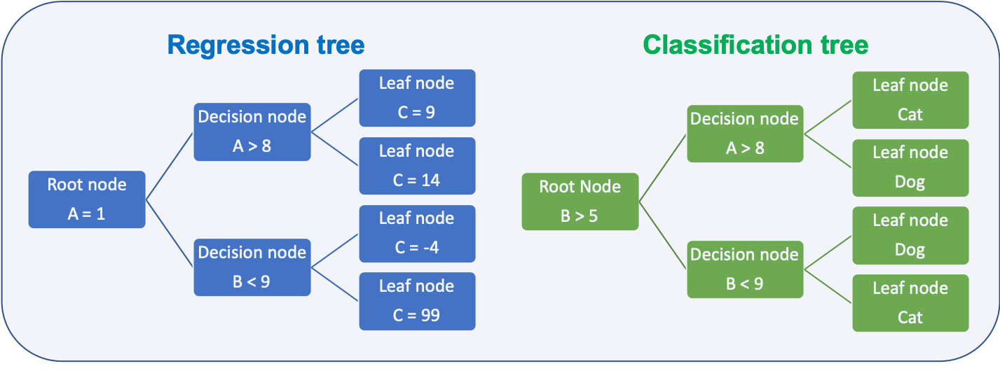
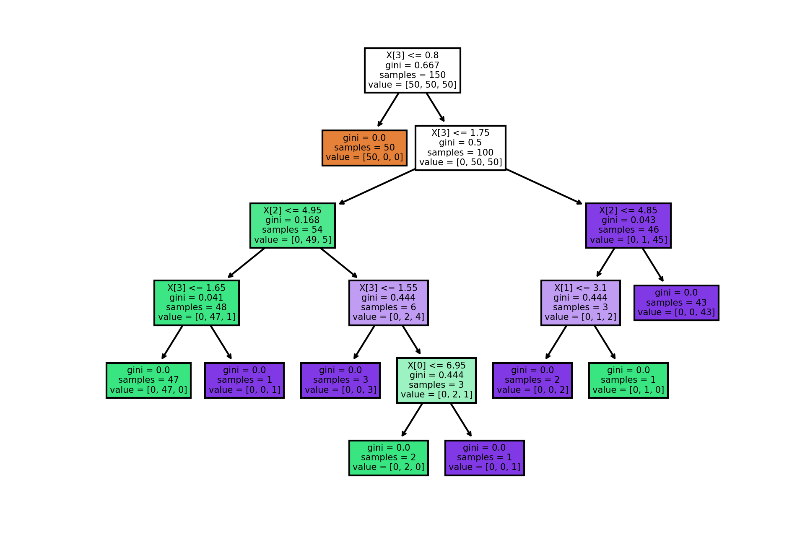
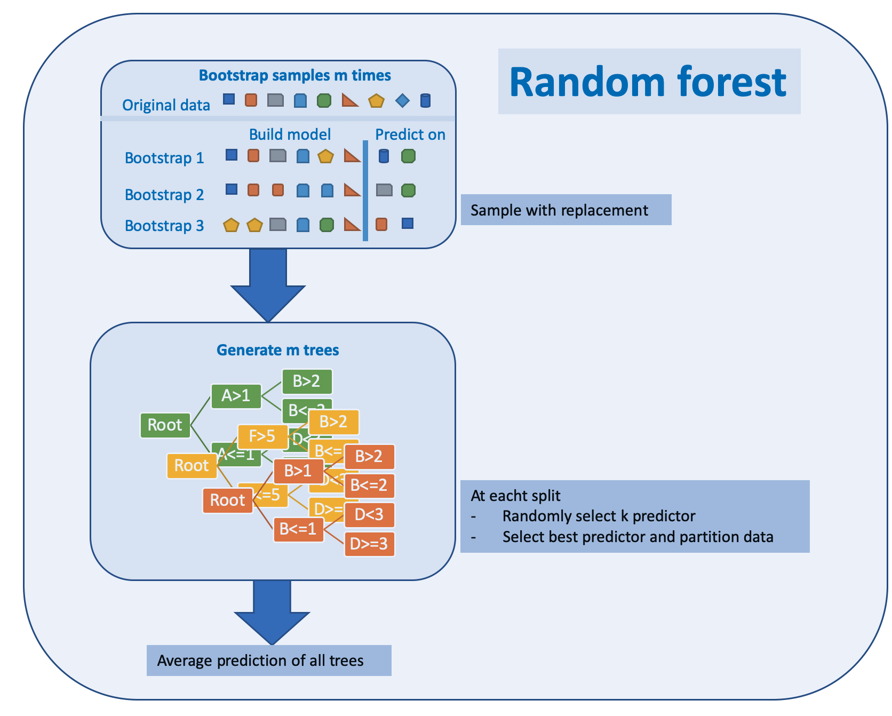
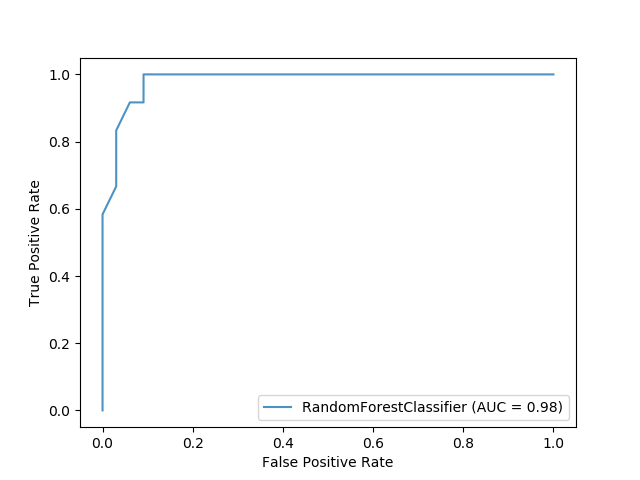

7.3 Tree based methods TBD
Tree based methods can be used for different predictions:
Types of predictions:
- Regression trees
- predict quantitative response
- Classification trees
- predict qualitative response

Depending on the task the metric to decide how to split the data is different:
Metric for splits:
- Regression
- Residual sum of squares (RSS)
- Goal is to minimize the value
- Classification
- Gini index
- Cross entropy
- Both metrics are numerically very similar
- Goal is to minimize the value
7.3.1 Splitting metrics
Deciding how to split the data at a node is done based on metrics which shall be minimal for the split
Residual sum of squares (RSS):
- Regression trees
- How close are the samples to the mean of all samples in the resulting node
- \(RSS = \sum_{k=1}^{K}\sum_{bi€R_j}(y_i-\hat{y}_{Rj})^2\)
Gini index:
- Classification
- How pure is are the resulting leafs
- \(G = \sum_{k=1}^{K}p_i(1-p_i)\)
Cross-entropy:
How pure is are the resulting leafs
\(D = - \sum_{k=1}^{K}p_i \log_{10}(p_i)\)
An example on how the gini value changes 
# source: https://scikit-learn.org/stable/auto_examples/tree/plot_iris_dtc.html#sphx-glr-auto-examples-tree-plot-iris-dtc-py
import numpy as np
import matplotlib.pyplot as plt
from sklearn.datasets import load_iris
from sklearn.tree import DecisionTreeClassifier, plot_tree
# Parameters
n_classes = 3
plot_colors = "ryb"
plot_step = 0.02
# Load data
iris = load_iris()
for pairidx, pair in enumerate([[0, 1], [0, 2], [0, 3],
[1, 2], [1, 3], [2, 3]]):
# We only take the two corresponding features
X = iris.data[:, pair]
y = iris.target
# Train
clf = DecisionTreeClassifier().fit(X, y)
# Plot the decision boundary
plt.subplot(2, 3, pairidx + 1)
x_min, x_max = X[:, 0].min() - 1, X[:, 0].max() + 1
y_min, y_max = X[:, 1].min() - 1, X[:, 1].max() + 1
xx, yy = np.meshgrid(np.arange(x_min, x_max, plot_step),
np.arange(y_min, y_max, plot_step))
plt.tight_layout(h_pad=0.5, w_pad=0.5, pad=2.5)
Z = clf.predict(np.c_[xx.ravel(), yy.ravel()])
Z = Z.reshape(xx.shape)
cs = plt.contourf(xx, yy, Z, cmap=plt.cm.RdYlBu)
plt.xlabel(iris.feature_names[pair[0]])
plt.ylabel(iris.feature_names[pair[1]])
# Plot the training points
for i, color in zip(range(n_classes), plot_colors):
idx = np.where(y == i)
plt.scatter(X[idx, 0], X[idx, 1], c=color, label=iris.target_names[i],
cmap=plt.cm.RdYlBu, edgecolor='black', s=15)
plt.suptitle("Decision surface of a decision tree using paired features")
plt.legend(loc='lower right', borderpad=0, handletextpad=0)
plt.axis("tight")
plt.figure(dpi = 300) # Uwe Sterr added dpi argument for better readability of plot
clf = DecisionTreeClassifier().fit(iris.data, iris.target)
plot_tree(clf, filled=True)
plt.show()7.3.2 Ensembles
Prediction ability of a single decision tree is limited, several techniques are employed to enhance the ability. All of them are aimed at buidling a ensemble of trees which combined have a higher prediction ability than a single tree.
Ensembling methods:
7.3.2.1 Bootstrap
Bootstrapping is resembling method that relies on sampling with replacement as shown in the image below

Bootstrap is a widely applicable and extremely powerful statistical tool that allow assigning measures of accuracy associated with a given estimator or statistical learning method.
It is used by the random forest algorithm as described in chapter 7.3.3
7.3.2.2 Bagging
Bagging is short for bootstrap and aggregation and is a general purpose procedure for reducing the variance of a machine learning algorithm. It is particularly useful and frequently used in the context of decision trees.
For random forests the method works as follows:
Bootstrapping for random forest:
- Generate training data by bootstrapping from the original training data set
- Generate a tree
- Repeat this M times
- Predict by averaging the predictions of all trees
7.3.2.3 Boosting
Boosting can be utilized for regression and classification problems. It produces an ensemble of weak learners, typically decision trees. The models are build sequentially allowing optimization of an arbitrary differentiable loss function. An example on how boosting works for tree is given in chapter 7.3.4
7.3.3 Random forest TBD
Random forest has its name from the randomly selected predictors at each split. The Algorithm is described in (Kuhn and Johnson 2013) p. 200:
Random forest algorithm:
- Select number of models to build m
- for each model
- generate bootstrap sample of the original data
- train a tree model for this sample
- at each split
- select randomly k of the original predictors
- select best predictor
- partition the data
- until model stop criteria is meet
- average prediction of all trees for new samples
The algorithm can be depicted as below

Random forests have weaknesses and strengths
Pros and cons of random forest:
- Pro
- Handle higher dimensionality data very well
- Handles missing values well
- Cons
- Due to aggregation of all trees no precise values for regression
7.3.3.1 Python example for random forest
The sample code for a random forest classifier produces a ROC image as shown below

import matplotlib.pyplot as plt
from sklearn.ensemble import RandomForestClassifier
from sklearn.metrics import plot_roc_curve
from sklearn.datasets import load_wine
from sklearn.model_selection import train_test_split
X, y = load_wine(return_X_y=True)
y = y == 2
X_train, X_test, y_train, y_test = train_test_split(X, y, random_state=42)
rfc = RandomForestClassifier(n_estimators=10, random_state=42)
rfc.fit(X_train, y_train)
ax = plt.gca()
rfc_disp = plot_roc_curve(rfc, X_test, y_test, ax=ax, alpha=0.8)
plt.show()7.3.3.2 Parameters for random forest
The parameters are from the scikit-learn webpage https://scikit-learn.org/stable/modules/generated/sklearn.ensemble.RandomForestClassifier.html#sklearn.ensemble.RandomForestClassifier
- n_estimatorsinteger, optional (default=100)
-
The number of trees in the forest.
Changed in version 0.22: The default value of
n_estimatorschanged from 10 to 100 in 0.22. - criterionstring, optional (default=”gini”)
-
The function to measure the quality of a split. Supported criteria are “gini” for the Gini impurity and “entropy” for the information gain. Note: this parameter is tree-specific.
- max_depthinteger or None, optional (default=None)
-
The maximum depth of the tree. If None, then nodes are expanded until all leaves are pure or until all leaves contain less than min_samples_split samples.
- min_samples_splitint, float, optional (default=2)
-
The minimum number of samples required to split an internal node:
-
If int, then consider
min_samples_splitas the minimum number. -
If float, then
min_samples_splitis a fraction andceil(min_samples_split * n_samples)are the minimum number of samples for each split.
Changed in version 0.18: Added float values for fractions.
-
- min_samples_leafint, float, optional (default=1)
-
The minimum number of samples required to be at a leaf node. A split point at any depth will only be considered if it leaves at least
min_samples_leaftraining samples in each of the left and right branches. This may have the effect of smoothing the model, especially in regression.-
If int, then consider
min_samples_leafas the minimum number. -
If float, then
min_samples_leafis a fraction andceil(min_samples_leaf * n_samples)are the minimum number of samples for each node.
Changed in version 0.18: Added float values for fractions.
-
- min_weight_fraction_leaffloat, optional (default=0.)
-
The minimum weighted fraction of the sum total of weights (of all the input samples) required to be at a leaf node. Samples have equal weight when sample_weight is not provided.
- max_featuresint, float, string or None, optional (default=”auto”)
-
The number of features to consider when looking for the best split:
-
If int, then consider
max_featuresfeatures at each split. -
If float, then
max_featuresis a fraction andint(max_features * n_features)features are considered at each split. -
If “auto”, then
max_features=sqrt(n_features). -
If “sqrt”, then
max_features=sqrt(n_features)(same as “auto”). -
If “log2”, then
max_features=log2(n_features). -
If None, then
max_features=n_features.
Note: the search for a split does not stop until at least one valid partition of the node samples is found, even if it requires to effectively inspect more than
max_featuresfeatures. -
- max_leaf_nodesint or None, optional (default=None)
-
Grow trees with
max_leaf_nodesin best-first fashion. Best nodes are defined as relative reduction in impurity. If None then unlimited number of leaf nodes. - min_impurity_decreasefloat, optional (default=0.)
-
A node will be split if this split induces a decrease of the impurity greater than or equal to this value.
The weighted impurity decrease equation is the following:
N_t / N * (impurity - N_t_R / N_t * right_impurity - N_t_L / N_t * left_impurity)
where
Nis the total number of samples,N_tis the number of samples at the current node,N_t_Lis the number of samples in the left child, andN_t_Ris the number of samples in the right child.N,N_t,N_t_RandN_t_Lall refer to the weighted sum, ifsample_weightis passed.New in version 0.19.
- min_impurity_splitfloat, (default=1e-7)
-
Threshold for early stopping in tree growth. A node will split if its impurity is above the threshold, otherwise it is a leaf.
Deprecated since version 0.19:
min_impurity_splithas been deprecated in favor ofmin_impurity_decreasein 0.19. The default value ofmin_impurity_splitwill change from 1e-7 to 0 in 0.23 and it will be removed in 0.25. Usemin_impurity_decreaseinstead. - bootstrapboolean, optional (default=True)
-
Whether bootstrap samples are used when building trees. If False, the whole datset is used to build each tree.
- oob_scorebool (default=False)
-
Whether to use out-of-bag samples to estimate the generalization accuracy.
- n_jobsint or None, optional (default=None)
-
The number of jobs to run in parallel.
fit,predict,decision_pathandapplyare all parallelized over the trees.Nonemeans 1 unless in ajoblib.parallel_backendcontext.-1means using all processors. See Glossary for more details. - random_stateint, RandomState instance or None, optional (default=None)
-
Controls both the randomness of the bootstrapping of the samples used when building trees (if
bootstrap=True) and the sampling of the features to consider when looking for the best split at each node (ifmax_features < n_features). See Glossary for details. - verboseint, optional (default=0)
-
Controls the verbosity when fitting and predicting.
- warm_startbool, optional (default=False)
-
When set to
True, reuse the solution of the previous call to fit and add more estimators to the ensemble, otherwise, just fit a whole new forest. See the Glossary. - class_weightdict, list of dicts, “balanced”, “balanced_subsample” or None, optional (default=None)
-
Weights associated with classes in the form
{class_label: weight}. If not given, all classes are supposed to have weight one. For multi-output problems, a list of dicts can be provided in the same order as the columns of y.Note that for multioutput (including multilabel) weights should be defined for each class of every column in its own dict. For example, for four-class multilabel classification weights should be [{0: 1, 1: 1}, {0: 1, 1: 5}, {0: 1, 1: 1}, {0: 1, 1: 1}] instead of [{1:1}, {2:5}, {3:1}, {4:1}].
The “balanced” mode uses the values of y to automatically adjust weights inversely proportional to class frequencies in the input data as
n_samples / (n_classes * np.bincount(y))The “balanced_subsample” mode is the same as “balanced” except that weights are computed based on the bootstrap sample for every tree grown.
For multi-output, the weights of each column of y will be multiplied.
Note that these weights will be multiplied with sample_weight (passed through the fit method) if sample_weight is specified.
- ccp_alphanon-negative float, optional (default=0.0)
-
Complexity parameter used for Minimal Cost-Complexity Pruning. The subtree with the largest cost complexity that is smaller than
ccp_alphawill be chosen. By default, no pruning is performed. See Minimal Cost-Complexity Pruning for details.New in version 0.22.
- max_samplesint or float, default=None
-
If bootstrap is True, the number of samples to draw from X to train each base estimator.
-
If None (default), then draw
X.shape[0]samples. -
If int, then draw
max_samplessamples. -
If float, then draw
max_samples * X.shape[0]samples. Thus,max_samplesshould be in the interval(0, 1).
New in version 0.22.
-
7.3.4 Boosted trees TBD
Boosted trees are an ensemble of weak learners where each learner is build on the knowledge gained by all previous learners.
The following image depicts the algorithm which can be summarized:
Boosted tree algorithm
- Generate small tree
- Calculate residuals for all samples
- Use residuals to generate next tree
- Combine all trees to build new model
- Repeat from step 1.
The algorithm is depicted below
Figure based on (Zhang et al. 2018), added explanation at the right hand side
Boosted trees have weaknesses and strengths
Pros and cons of boosted trees:
- Pro
- Supports different loss functions
- Cons
- Prone to overfitting
- Carefully tuning of hyperparameters is required
The algorithm of boosted trees for regression is described in a rather mathematically way in (James et al. 2013) p. 323:
- Set \(\hat{f} = 0\) and \(r_i = y_i\) for all \(i\) in the training set
- For \(b=1,2,\dots,B\) repeat:
- Fit a tree \(\hat{f}^b\) with \(d\) splits (\(d+1\) terminal nodes) to the training data \((X,r)\)
- Update \(\hat{f}\) by adding in a shrunken version of the new tree \(\hat{f}(x) \leftarrow \hat{f}(x) + \lambda \hat{f}^b(x)\)
- Update the residuals \(r_i \leftarrow r_i + \lambda \hat{f}^b(x_i)\)
- Output the boosted model \(\hat{f}(x) = \sum_{b=1}^{B}\lambda \hat{f}^b(x)\)
Another introduction to boosted trees is given at the XGBoost Documentation with a thorough mathematical explanation of the approach.
7.3.4.1 Python examples for boosted trees
A popular library for boosted trees in Python is XGBoost, the documentation is hosted at https://xgboost.readthedocs.io/en/latest/.
Plenty of examples are on the GitHub page https://github.com/dmlc/xgboost/tree/master/demo/guide-python.
The example script basic_walkthrough.py is shown below
#!/usr/bin/python
import numpy as np
import scipy.sparse
import pickle
import xgboost as xgb
### simple example
# load file from text file, also binary buffer generated by xgboost
dtrain = xgb.DMatrix('../data/agaricus.txt.train')
dtest = xgb.DMatrix('../data/agaricus.txt.test')
# specify parameters via map, definition are same as c++ version
param = {'max_depth':2, 'eta':1, 'silent':1, 'objective':'binary:logistic'}
# specify validations set to watch performance
watchlist = [(dtest, 'eval'), (dtrain, 'train')]
num_round = 2
bst = xgb.train(param, dtrain, num_round, watchlist)
# this is prediction
preds = bst.predict(dtest)
labels = dtest.get_label()
print('error=%f' % (sum(1 for i in range(len(preds)) if int(preds[i] > 0.5) != labels[i]) / float(len(preds))))
bst.save_model('0001.model')
# dump model
bst.dump_model('dump.raw.txt')
# dump model with feature map
bst.dump_model('dump.nice.txt', '../data/featmap.txt')
# save dmatrix into binary buffer
dtest.save_binary('dtest.buffer')
# save model
bst.save_model('xgb.model')
# load model and data in
bst2 = xgb.Booster(model_file='xgb.model')
dtest2 = xgb.DMatrix('dtest.buffer')
preds2 = bst2.predict(dtest2)
# assert they are the same
assert np.sum(np.abs(preds2 - preds)) == 0
# alternatively, you can pickle the booster
pks = pickle.dumps(bst2)
# load model and data in
bst3 = pickle.loads(pks)
preds3 = bst3.predict(dtest2)
# assert they are the same
assert np.sum(np.abs(preds3 - preds)) == 0
###
# build dmatrix from scipy.sparse
print('start running example of build DMatrix from scipy.sparse CSR Matrix')
labels = []
row = []; col = []; dat = []
i = 0
for l in open('../data/agaricus.txt.train'):
arr = l.split()
labels.append(int(arr[0]))
for it in arr[1:]:
k,v = it.split(':')
row.append(i); col.append(int(k)); dat.append(float(v))
i += 1
csr = scipy.sparse.csr_matrix((dat, (row, col)))
dtrain = xgb.DMatrix(csr, label=labels)
watchlist = [(dtest, 'eval'), (dtrain, 'train')]
bst = xgb.train(param, dtrain, num_round, watchlist)
print('start running example of build DMatrix from scipy.sparse CSC Matrix')
# we can also construct from csc matrix
csc = scipy.sparse.csc_matrix((dat, (row, col)))
dtrain = xgb.DMatrix(csc, label=labels)
watchlist = [(dtest, 'eval'), (dtrain, 'train')]
bst = xgb.train(param, dtrain, num_round, watchlist)
print('start running example of build DMatrix from numpy array')
# NOTE: npymat is numpy array, we will convert it into scipy.sparse.csr_matrix in internal implementation
# then convert to DMatrix
npymat = csr.todense()
dtrain = xgb.DMatrix(npymat, label=labels)
watchlist = [(dtest, 'eval'), (dtrain, 'train')]
bst = xgb.train(param, dtrain, num_round, watchlist)The parameters below are from their webpage https://xgboost.readthedocs.io/en/latest/parameter.html#learning-task-parameters
Learning Task Parameters¶
Specify the learning task and the corresponding learning objective. The objective options are below:
-
objective[default=reg:squarederror]-
reg:squarederror: regression with squared loss. -
reg:squaredlogerror: regression with squared log loss . All input labels are required to be greater than -1. Also, see metricrmslefor possible issue with this objective. -
reg:logistic: logistic regression -
binary:logistic: logistic regression for binary classification, output probability -
binary:logitraw: logistic regression for binary classification, output score before logistic transformation -
binary:hinge: hinge loss for binary classification. This makes predictions of 0 or 1, rather than producing probabilities. -
count:poisson–poisson regression for count data, output mean of poisson distribution-
max_delta_stepis set to 0.7 by default in poisson regression (used to safeguard optimization)
-
-
survival:cox: Cox regression for right censored survival time data (negative values are considered right censored). Note that predictions are returned on the hazard ratio scale (i.e., as HR = exp(marginal_prediction) in the proportional hazard functionh(t) = h0(t) * HR). -
multi:softmax: set XGBoost to do multiclass classification using the softmax objective, you also need to set num_class(number of classes) -
multi:softprob: same as softmax, but output a vector ofndata nclass, which can be further reshaped tondata nclassmatrix. The result contains predicted probability of each data point belonging to each class. -
rank:pairwise: Use LambdaMART to perform pairwise ranking where the pairwise loss is minimized -
rank:ndcg: Use LambdaMART to perform list-wise ranking where Normalized Discounted Cumulative Gain (NDCG) is maximized -
rank:map: Use LambdaMART to perform list-wise ranking where Mean Average Precision (MAP) is maximized -
reg:gamma: gamma regression with log-link. Output is a mean of gamma distribution. It might be useful, e.g., for modeling insurance claims severity, or for any outcome that might be gamma-distributed. -
reg:tweedie: Tweedie regression with log-link. It might be useful, e.g., for modeling total loss in insurance, or for any outcome that might be Tweedie-distributed.
-
-
base_score[default=0.5]-
The initial prediction score of all instances, global bias
-
For sufficient number of iterations, changing this value will not have too much effect.
-
-
eval_metric[default according to objective]-
Evaluation metrics for validation data, a default metric will be assigned according to objective (rmse for regression, and error for classification, mean average precision for ranking)
-
User can add multiple evaluation metrics. Python users: remember to pass the metrics in as list of parameters pairs instead of map, so that latter
eval_metricwon’t override previous one -
The choices are listed below:
-
rmse: root mean square error -
rmsle: root mean square log error: . Default metric ofreg:squaredlogerrorobjective. This metric reduces errors generated by outliers in dataset. But becauselogfunction is employed,rmslemight outputnanwhen prediction value is less than -1. Seereg:squaredlogerrorfor other requirements. -
mae: mean absolute error -
logloss: negative log-likelihood -
error: Binary classification error rate. It is calculated as#(wrong cases)/#(all cases). For the predictions, the evaluation will regard the instances with prediction value larger than 0.5 as positive instances, and the others as negative instances. -
error@t: a different than 0.5 binary classification threshold value could be specified by providing a numerical value through ‘t’. -
merror: Multiclass classification error rate. It is calculated as#(wrong cases)/#(all cases). -
mlogloss: Multiclass logloss. -
auc: Area under the curve -
aucpr: Area under the PR curve -
ndcg@n,map@n: ‘n’ can be assigned as an integer to cut off the top positions in the lists for evaluation. -
ndcg-,map-,ndcg@n-,map@n-: In XGBoost, NDCG and MAP will evaluate the score of a list without any positive samples as 1. By adding “-” in the evaluation metric XGBoost will evaluate these score as 0 to be consistent under some conditions. -
poisson-nloglik: negative log-likelihood for Poisson regression -
gamma-nloglik: negative log-likelihood for gamma regression -
cox-nloglik: negative partial log-likelihood for Cox proportional hazards regression -
gamma-deviance: residual deviance for gamma regression -
tweedie-nloglik: negative log-likelihood for Tweedie regression (at a specified value of thetweedie_variance_powerparameter)
-
-
-
seed[default=0]-
Random number seed. This parameter is ignored in R package, use set.seed() instead.
-
References
James, Gareth, Daniela Witten, Trevor Hastie, and Robert Tibshirani. 2013. An Introduction to Statistical Learning. Vol. 112. Springer.
Kuhn, Max, and Kjell Johnson. 2013. Applied Predictive Modeling. Vol. 26. Springer.
Zhang, Zhongxing, Geert Mayer, Yves Dauvilliers, Giuseppe Plazzi, Fabio Pizza, Rolf Fronczek, Joan Santamaria, et al. 2018. “Exploring the Clinical Features of Narcolepsy Type 1 Versus Narcolepsy Type 2 from European Narcolepsy Network Database with Machine Learning.” Scientific Reports 8 (1): 1–11.